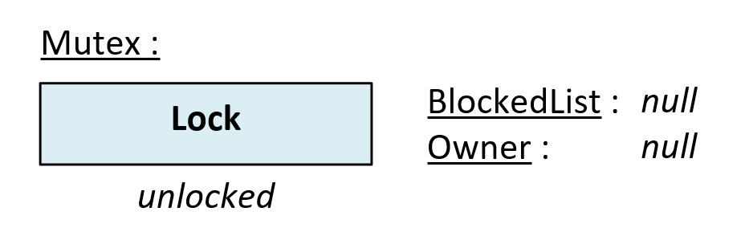
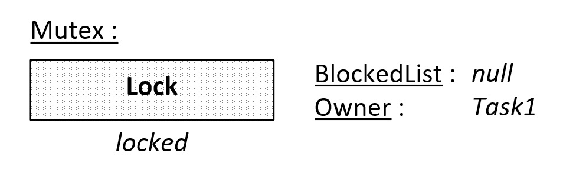
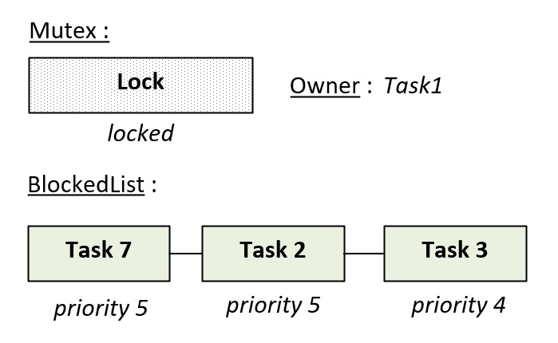
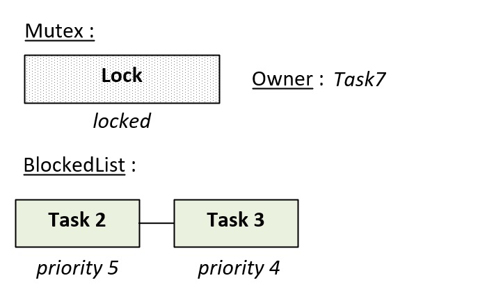
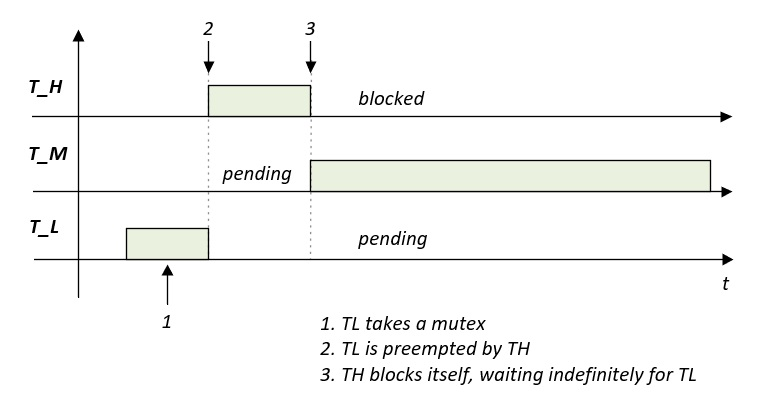
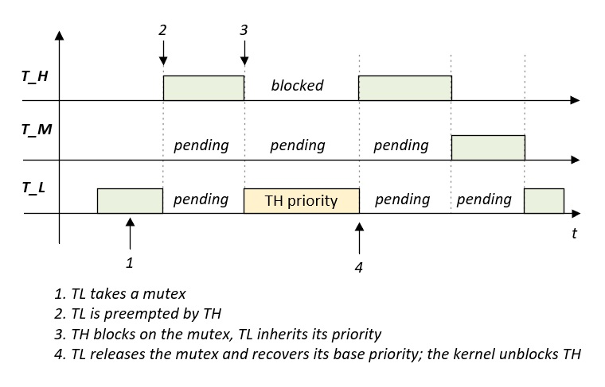

L'exclusion mutuelle avec les Mutex
Le module mutex garantit l'accès exclusif d'une tâche à une ressource partagée. Contrairement aux sémaphores, un mutex possède un propriétaire, le noyau peut donc résoudre les inversions de priorité. Cette page détaille le fonctionnement et l'utilisation des fonctions de ce module.
1. Synthèse des fonctions
Les fonctions de ce module sont déclarées dans le fichier mk_mutex.h :
| Fonction | Description |
|---|---|
| mk_ |
Crée un mutex. |
| mk_ |
Prend le jeton d'un mutex. |
| mk_ |
Libère le jeton d'un mutex. |
| mk_ |
Supprime un mutex. |
2. Fonctionnement
Un mutex (mutual exclusion) est un verrou à un seul jeton. Le jeton est soit verrouillé, soit déverrouillé. Lorsqu'il a été verrouillé par une tâche, celle-ci en devient la propriétaire. Tant que la tâche ne l'a pas libéré, aucune autre tâche ne peut accéder à la ressource protégée.
💬
La figure ci-dessous montre l'état initial d'un mutex après sa création :

Les mutex sont alloués par le noyau dans l'espace privilégié. Ils sont constitués d'une variable stockant l'état du jeton (Lock), d'une variable pointant vers la tâche propriétaire (Owner) et d'une liste stockant les tâches en attente du mutex (BlockedList). À sa création, le mutex est déverrouillé et ne possède pas de propriétaire.
💬
Le nombre de mutex pouvant être alloués par le noyau est limité. Il est défini à la
compilation par la constante K_
Lors d'un take, une tâche demande au noyau de prendre le mutex. S'il est déverrouillé, la tâche en devient la propriétaire et poursuit son exécution :

Lorsque le mutex est déjà verrouillé, la tâche peut décider de se bloquer en attendant sa libération. Les tâches bloquées sont insérées dans la liste d'attente du mutex (BlockedList).
💬
Les tâches de la liste d'attente sont triées par ordre de priorité. Si plusieurs tâches attendent le jeton, la tâche la plus prioritaire sera réveillée en premier. Lorsque plusieurs tâches possèdent la même priorité, la première tâche à avoir été insérée dans la liste est réveillée.
Lors d'un release, le propriétaire libère le mutex. Si au moins une tâche est en attente de celui-ci, le noyau réveille la tâche la plus prioritaire et lui transmet la propriété. Le mutex reste alors verrouillé. Les figures ci-dessous montrent l'évolution du mutex suite à un release :


Si aucune tâche n'est en attente, le mutex redevient libre et ne possède plus de propriétaire.
⚠️
Seule la tâche propriétaire peut libérer un mutex. Un release exécuté par une autre tâche ou sur un mutex dont le jeton est disponible aboutit à une erreur.
L'héritage de priorité
Considérons trois tâches : une tâche peu prioritaire T_L, une tâche de priorité intermédiaire T_M et une tâche très prioritaire T_H.
Si T_L détient un mutex et si T_H se bloque en attendant ce mutex, alors T_H dépend de T_L. Sans mécanisme particulier, T_M peut s'exécuter à la place de T_L et retarder indéfiniment la libération du mutex. La tâche la plus prioritaire est alors bloquée par une tâche moins prioritaire, c'est une inversion de priorité :

Pour éviter cette situation, le noyau applique l'héritage de priorité. Dès qu'une tâche se bloque sur un mutex, son propriétaire reçoit temporairement la priorité de la tâche bloquée. Dans la figure ci-dessous, T_L s'exécute avec la priorité de T_H et ne peut plus être préemptée par T_M :

Lors du release, le propriétaire retrouve sa priorité d'origine et le mutex est donné à T_H.
💬
Chaque tâche possède une priorité de base (priority) et une priorité courante (currentPriority). Seule la priorité courante est modifiée par l'héritage. Ce mécanisme est détaillé dans l'article Architecture et caractéristiques du noyau.
⚠️
Les mutex ne sont pas récursifs et une tâche ne peut détenir qu'un seul mutex à la fois. Une tâche
qui tente d'en verrouiller un second sans avoir libéré le premier obtient l'erreur K_
3. Avantages et inconvénients
Un mutex possède les avantages suivants :
- ✔Il garantit l'accès exclusif à une ressource.
- ✔Il supporte l'héritage de priorité.
Néanmoins, il possède aussi des limitations :
- ✘Une tâche ne peut détenir qu'un seul mutex à la fois.
- ✘Il ne peut être libéré que par la tâche qui l'a pris.
- ✘Il ne peut pas être utilisé dans un vecteur d'interruption.
💬
Pour protéger l'accès exclusif à une ressource partagée entre plusieurs tâches, il est préférable d'utiliser un mutex. Pour synchroniser une tâche avec une interruption ou pour compter des ressources, il vaut mieux utiliser un sémaphore.
4. Utilisation
La création d'un mutex s'effectue avec la fonction mk_
/* Pointeur du mutex */ K_MK_PRIVILEGED_BSS_MEMORY T_mkMutex* g_mutex; /* Une tâche privilégiée */ void mk_task_privileged ( T_mkAddr p_param ) { /* Déclaration de la variable de retour */ T_mkCode l_result; /* Création d'un mutex (le jeton est toujours disponible) */ /* Il est protégé et ne peut pas être manipulé par des tâches */ /* non privilégiées */ l_result = mk_mutex_create ( &g_mutex, K_MK_AREA_PROTECTED ); /* ... */ for ( ;; ) ; }
Suite à sa création, le mutex peut être pris et libéré en utilisant les fonctions mk_
/* Une tâche privilégiée */ void mk_task_privileged ( T_mkAddr p_param ) { /* Déclaration de la variable de retour */ T_mkCode l_result; while ( 1 ) { /* La tâche attend au maximum 10 ticks que le mutex se libère */ l_result = mk_mutex_take ( g_mutex, 10 ); if ( l_result == K_MK_OK ) { /* La tâche est propriétaire du mutex, la ressource */ /* peut être utilisée ... */ /* Libération du mutex */ l_result = mk_mutex_release ( g_mutex ); } else if ( l_result == K_MK_ERROR_TIMEOUT ) { /* Le mutex ne s'est pas libéré pendant 10 ticks */ } else { /* Gestion des erreurs ... */ /* K_MK_ERROR_PARAM, K_MK_ERROR_ISR, K_MK_ERROR_NESTED */ /* K_MK_ERROR_RIGHT */ } } }
💬
Si le paramètre p_mkTick est nul et si le mutex est détenu par
une autre tâche, la fonction mk_
💬
De même, si la tâche exécutant la fonction mk_
Une tâche ne peut détenir qu'un seul mutex à la fois. L'exemple ci-dessous montre l'erreur retournée lorsqu'une tâche tente de prendre un second mutex :
/* Prise du premier mutex */ l_result = mk_mutex_take ( g_mutex1, K_MK_TASK_WAIT_FOREVER ); if ( l_result == K_MK_OK ) { /* La tâche possède déjà un mutex, la prise d'un second mutex */ /* est refusée */ l_result = mk_mutex_take ( g_mutex2, K_MK_TASK_WAIT_FOREVER ); if ( l_result == K_MK_ERROR_NESTED ) { /* Le premier mutex doit être libéré avant de prendre le second */ } /* Libération du premier mutex */ l_result = mk_mutex_release ( g_mutex1 ); }
⚠️
Tant qu'une tâche possède un mutex, sa priorité ne peut pas être modifiée avec la fonction mk_
La dernière fonction de l'API est la fonction mk_mutex_delete. Elle permet de détruire le mutex en demandant au noyau de le désallouer :
/* Suppression du mutex */ T_mkCode l_result = mk_mutex_delete ( g_mutex ); /* Si une erreur s'est produite */ if ( l_result != K_MK_OK ) { /* Gestion des erreurs ... */ /* K_MK_ERROR_PARAM, K_MK_ERROR_ISR, K_MK_ERROR_RIGHT */ }
5. Protéger ses mutex
Les mutex peuvent être créés avec les attributs K_
Lorsque l'attribut K_
Les mutex étant alloués par le noyau dans l'espace privilégié, aucune règle de placement ne s'applique. Seules les variables stockant leurs adresses doivent être accessibles aux tâches qui les utilisent. Les règles de placement de ces variables sont détaillées dans l'article Protéger son programme avec Mk.
6. API
6.1. La fonction mk_mutex_create()
Cette fonction crée un mutex. Le jeton du mutex est disponible à la création.
Prototype :
T_mkCode mk_mutex_create ( T_mkMutex** p_mkMutex, uint32_t p_mkAreaType );
Paramètres :
- p_mkMutex [out]
Adresse d'un pointeur de type T_mkMutex*.
- p_mkAreaType [in]
Type du mutex. Les valeurs possibles sont les suivantes :
- K_MK_AREA_PROTECTED : le mutex est protégé, il ne peut pas être manipulé par des tâches non privilégiées.
- K_MK_AREA_UNPROTECTED : le mutex n'est pas protégé, il peut être manipulé par des tâches privilégiées ou non privilégiées.
Retour :
- K_MK_OK : le mutex a été créé.
- K_MK_ERROR_PARAM : le mutex n'a pas été créé car le paramètre est invalide.
- K_MK_ERROR_MALLOC : le mutex n'a pas été créé car le nombre maximal de mutex pouvant être alloués a été atteint.
- K_MK_ERROR_ISR : le mutex n'a pas été créé car cette fonction a été exécutée dans un vecteur d'interruption.
- K_MK_ERROR_RIGHT : le mutex n'a pas été créé car une tâche non privilégiée ne peut pas créer un mutex protégé.
Note :
- Cette fonction ne peut pas être exécutée dans un vecteur d'interruption.
- La constante K_
MK_ définit le nombre maximal de mutex pouvant être créés.SCHEDULER_ MAX_ NUMBER_ OF_ MUTEX
6.2. La fonction mk_mutex_take()
Cette fonction prend le jeton d'un mutex. Si le jeton n'est pas disponible, la tâche peut être bloquée en attendant qu'il soit libéré. Lorsque la tâche obtient le mutex, elle en devient propriétaire.
Prototype :
T_mkCode mk_mutex_take ( T_mkMutex* p_mkMutex, uint32_t p_mkTick );
Paramètres :
- p_mkMutex [in, out]
Adresse d'une structure de type T_mkMutex.
- p_mkTick [in]
Durée maximale de blocage de la tâche. Les valeurs possibles sont les suivantes :
- 0x0 : la fonction retourne immédiatement si le jeton n'est pas disponible.
- 0x1 à 0xFFFFFFFE : la tâche est bloquée pendant la durée spécifiée (en multiple de tick) tant que le jeton n'est pas disponible.
- 0xFFFFFFFF (K_MK_TASK_WAIT_FOREVER) : la tâche est bloquée tant que le jeton n'est pas disponible.
Retour :
- K_MK_OK : le mutex a été pris par la tâche.
- K_MK_ERROR_PARAM : le mutex n'a pas été pris car le paramètre est invalide.
- K_MK_ERROR_TIMEOUT : le mutex n'a pas été pris car il ne s'est pas libéré dans le délai imparti.
- K_MK_ERROR_ISR : le mutex n'a pas été pris car la fonction a été exécutée dans un vecteur d'interruption.
- K_MK_ERROR_NESTED : le mutex n'a pas été pris car la tâche appelante est déjà propriétaire d'un mutex.
- K_MK_ERROR_RIGHT : le mutex n'a pas été pris car une tâche non privilégiée ne peut pas manipuler un mutex protégé.
Note :
- Cette fonction ne peut pas être exécutée dans un vecteur d'interruption.
- Lorsque plusieurs tâches sont bloquées sur le même mutex, la propriété du mutex est transmise à la tâche la plus prioritaire.
- Lorsqu'une tâche se bloque, le propriétaire du mutex hérite de sa priorité si celle-ci est supérieure à la sienne.
6.3. La fonction mk_mutex_release()
Cette fonction libère le jeton d'un mutex. Si au moins une tâche est en attente du mutex, la tâche la plus prioritaire est réveillée et en devient propriétaire. Le propriétaire retrouve sa priorité d'origine.
Prototype :
T_mkCode mk_mutex_release ( T_mkMutex* p_mkMutex );
Paramètres :
- p_mkMutex [in, out]
Adresse d'une structure de type T_mkMutex.
Retour :
- K_MK_OK : le mutex a été libéré.
- K_MK_ERROR_PARAM : le mutex n'a pas été libéré car le paramètre est invalide.
- K_MK_ERROR_TIMEOUT : le mutex n'a pas été libéré car la tâche appelante n'est pas propriétaire du mutex.
- K_MK_ERROR_ISR : le mutex n'a pas été libéré car la fonction a été exécutée dans un vecteur d'interruption.
- K_MK_ERROR_RIGHT : le mutex n'a pas été libéré car une tâche non privilégiée ne peut pas manipuler un mutex protégé.
Note :
- Cette fonction ne peut pas être exécutée dans un vecteur d'interruption.
- Seule la tâche propriétaire peut libérer le mutex.
6.4. La fonction mk_mutex_delete()
Cette fonction détruit un mutex.
Prototype :
T_mkCode mk_mutex_delete ( T_mkMutex* p_mkMutex );
Paramètres :
- p_mkMutex [in, out]
Adresse d'une structure de type T_mkMutex.
Retour :
- K_MK_OK : le mutex a été détruit.
- K_MK_ERROR_PARAM : le mutex n'a pas été détruit car le paramètre est invalide ou le mutex est verrouillé.
- K_MK_ERROR_ISR : le mutex n'a pas été détruit car la fonction a été exécutée dans un vecteur d'interruption.
- K_MK_ERROR_RIGHT : le mutex n'a pas été détruit car une tâche non privilégiée ne peut pas manipuler un mutex protégé.
Note :
- Un mutex verrouillé ne peut pas être détruit.
- Cette fonction ne peut pas être exécutée dans un vecteur d'interruption.
Attention :
⚠️
- Les tâches bloquées par la fonction mk_
mutex_ ne sont pas réveillées lorsque le mutex est détruit.take
6.5. Les définitions
Le module mutex peut être configuré à l'aide des définitions suivantes :
| Définition | Description | Valeur |
|---|---|---|
| K_MK_ |
Cette constante définit le nombre de mutex pouvant être créés. Elle ne peut pas être nulle. | 32 |
Un mutex se comporte comme un sémaphore binaire auquel on aurait ajouté la notion de propriétaire. C'est cette information qui permet au noyau de réaliser l'héritage de priorité.